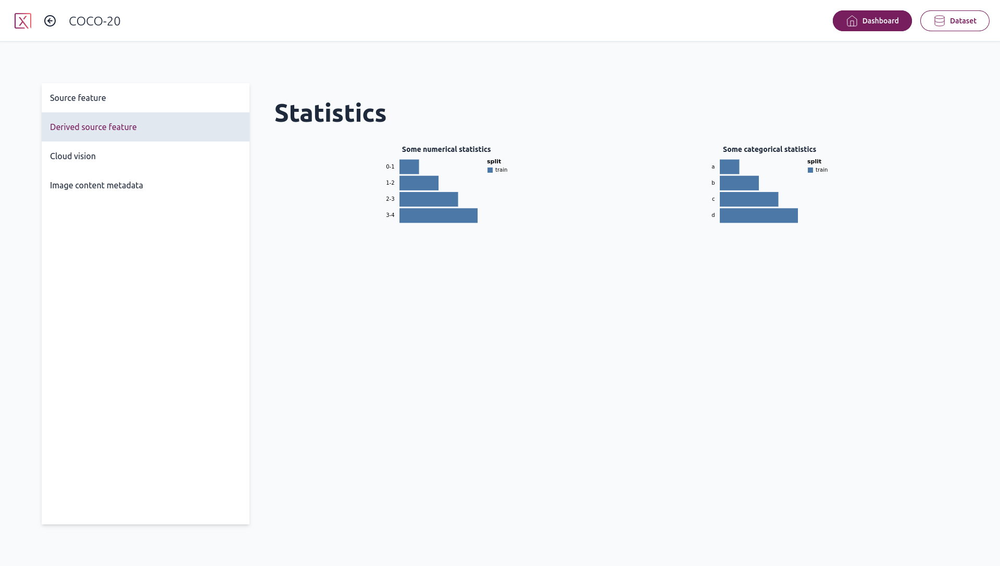
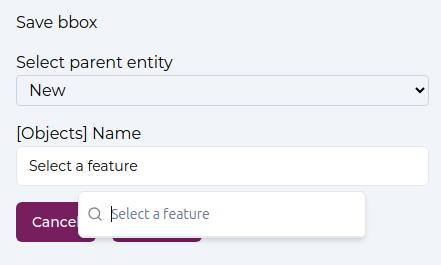

Using Pixano
Home page
From the app home page, you will be greeted with a list of all the Pixano format datasets found in the directory you provided.

Header
On the header is displayed the number of datasets and total number of items in datasets. A field allows to filter datasets by contained text.
Dataset Card

Each dataset card display dataset name, number of items, an image (currently user-defined), and the dataset kind (Image, Video, VQA or EntityLinking), if defined.
When hovering over a dataset card, a tooltip will display this dataset specific information: name, description, maximum number of views, total number of entities, as well as a count of each different annotations.
Clicking on a dataset card will lead to the selected dataset page.
Dataset page
On the dataset page, you will see a list of all the items it contains, by pages of 20 items.

Header
On the header is displayed the dataset name. Pixano logo allows to go back to Pixano home page. "Dashboard" and "Dataset" buttons allows to switch between Dashboard and Dataset view. Datasets are always open in "Dataset" mode first.
Column filter

You can filter table by choosing a column and a value. the right button clear the filter.
Note: "Free mode" allows to type your filter, as a basic SQL WHERE clause. Only listed columns are availables. Strings must be enclosed in single quotes in free mode.
Free mode example: id LIKE '%009' AND split = 'train2017' will filter rows where id ends with 009 and split equals 'train2017'.
Semantic search

If you have computed semantic embeddings, semantic search will be displayed. You can select semantic embeddings (stored in a table) and type some text to get your dataset items sorted by semantic distance to this text (closer first).
Item table
Table header display columns name. By default, the "images" columns are first, then dataset items metadatas, then computed counts columns (with a leading '#'). Except images columns, you can order items of any column, ascending or descending, by clicking on it.
This ordering is disabled after a semantic search.
The "gear" icon open a panel to select which columns to display, and reorder them. By default all available columns are displayed.
Navigation
Navigation buttons at bottom allows to move through the pages of your dataset.
Clicking on any item lead to Item page.
Dashboard page

From the dataset page, you can go to the dashboard page, which contains more information about your datasets and also displays all the computed statistics available.
Item page - Common
When opening an item, the item media will be displayed in the center on the screen. For multi-view datasets, the images will be tiled.
On the right, a two-tab panel, Object or Scene, is displayed.
For Video datasets, there will be a timeline display of tracks.
For VQA and EntityLinking datasets, ther will be a text panel on the left.
In the following sub-sections we will cover only common subjects for all kind of dataset. Specifics are in their respectives sections.
You can resize panels by dragging the thin border pink line between them.
Header
The "Home" icon return to home page.
The circled left arrow go back to dataset explorer page, at the current item's page.
Dataset item id is displayed next.
Left and right arrows allows to go to previous/next item, in the current selection and order. Shortcuts, detailed in tooltip, are available too.
Next, is displayed the index of current item in the full selection, ordered.
The toolbar is at the center.
"Save" button on the right. It has a pulsing dot when there is changes to save.
Scene panel

The scene panel will display all the scene features, like the item split, or any other feature created when importing your dataset, as well as metadata information on all the images in the item.
You can edit the scene features and then click the save changes button to write them to the dataset.
There is also a set of image filters and settings. They allow to disable / enable image smoothing, equalize the image histogram, and tune brightness, contrast, or RGB channels.
Object panel

The objects panel will display all the item objects.
On the header line just under tabs, a global visibility icon can hide/show all objects. On the right, an "options" icon, and the number of objects is displayed. If some filter apply, this the number of filtered object / total number of objects.
Options
By clicking on "Options" icon, the option panel opens.

Here you can set a threshold for bounding boxes confidence.
In video mode, disable / enable interpolation of bounding boxes and keypoints.
Filters are available. You can add new filter wit 'AND" or "OR" buttons, and clear the filters with the "clear" icon. For each filter, you have to select a table, a field, an operator, and a value. Note that "AND" has precedence over "OR". Click on "Filter" button to apply.
Object card
For each object in the dataset item, an object card is displayed.
An "Eye" icon allows to toggle visibility.
A colored dot show the color used to display this object. Clicking on it select it. In Video mode, it will change current frame to the first visible instance.
Next is the 'name' (in fact the first available feature amongst "name", "category", "category_name"), as well as the object id (parenthized if there is a 'name').
A "Trash" icon, when opened or on hover, allows to delete the object. It requires another click within 3 seconds to confirm.
In Video mode, ther is a "Hide track"/"Show track" icon. It toggle the track display in Video Inspector
The right most "chevron" icon open the details.
When opened, there is at most 4 sub-sections: Features, Objects, Thumbnails and Text spans. Some are displayed only if relevant.
-
"Features" display the object features. Clicking on the "Edit" icon allows to edit them. Each features is displayed with it's table name in brackets (in some cases features are from different sub-objects).
-
"Object" display the sub-objects, somehow the shapes belonging to that object, or entity. For video, there can be another layer as shapes are under tracklets. Under tracklet, interpolated shapes do not offer interaction here as this is not real objects of your dataset. See Track Item for other interactions on tracks and tracklets.
For each sub object, here also an "Eye" icon to toggle visibility, then an icon that represent the kind of sub-object (bounding box, mask, keypoints, text, or tracklet). Hovering on it show the actual class. Next is it's id. On the right, an "Edit" icon, if relevant, allows to modify the shape. A "Link" icon allows to relink this shape in another object (entity). And finally a "Trash" icon to delete it.
-
"Thumbnails" shows a crop of the object, if relevant. Note: It is not meant to be the exact bounding box, if any, but as a quick look on the object.
-
"Text spans" is only for EntityLinking datasets, and show a table associating text span features to the actual text span (the highlighted text).
Toolbar
Pan tool
With the pan tool selected, you can move the image around. This is especially useful for multi-view datasets for organizing multiple images.
Moving the images is still possible while any other tools is selected by using your mouse middle click. You can also zoom in and out of an image with the mouse wheel, and double click an image to bring it in front of the others.
Note: if you want to select image or an object under another object, you can select the front one and hide it with visibility icon on right panel. Then you can go through the hidden one.
Creation tools
Each of theses tools allows creation of a new shape.
There is 3 manual creation tools, and the interactive segmentation tool.
For each tool, when the shape is drawn, you will be prompted to enter values for your object features depending on your dataset, and to confirm the object.

The dropbox "Select parent Entity" let choose if the object is a new object, or if it belongs to an existing one.
Below, each relevant feature for this shape is listed, with an input to enter value. If Features Values are defined, choices may be proposed.
Bounding box tool
With the bounding box tool, you can create a bounding box object by click and dragging a rectangle over the image.
Polygon tool
With the polygon tool, you can create a segmentation mask manually by adding points with the granularity of your choice.
Keypoints tool
With the keypoints tool, you can create a keypoints. First select one of the keypoints templates, then drag a box to roughly place the template. Now you can place each keypoint by dragging them.
Once created, by editing keypoints shape, you can change a keypoint status (visible, hidden, invisible) by clicking on it.
Smart segmentation tool
With Pixano, you can segment with smart segmentation tool like SAM (Segment Anything Model).
The first time you click on the "magicwand" icon, the Smart Model Selection modal will open, to configure the segmentation model to use. See more information on Smart Model Selection for configuration.
With the positive and negative points, you can inform the interactive segmentation tool on which part of the image you are trying to segment, and it will generate the mask.
When relevant, you can also use the rectangle tool to select the thing you want to segment.
Associate tool
In Video mode only, a "associate" icon allows to merge tracks.
In this mode, select a first object in any view, then other objects to associate. Clicking again on a object deselect it. Object that cannot be selected, because of current selection, are greyed out. You can move in the timeline, select in other view or other kind of shapes. Validate when done. All selected objects are merged in the first one of the selected list.
Item page - Video Dataset
In this mode, a specific "associate" tool is available in the toolbar.
Video Inspector
Video Inspector panel is displayed in the bottom.
Here you have the timeline, with each track, and a control panel at the bottom.
Timeline
The time axis, in seconds. You can change (click or drag) the current time of the video.
Track item
Upon each track is displayed a colored dot and 'name' (id) (same as in Object Card)
Then, all tracklets are shown as lines. Horizontal level correspond to each view, for multiview dataset. If the track, or tracklet, is selected, and the timeline zoom is enough (depends on frame density), keyframes are shown too. Keyframes are "real" shapes. On frames between keyframes, inside a traclet, the shape is interpolated (bounding boxes and keypoints).
A left-click on a tracklet change the current time.
A right click on a tracklet select it and open the tracklet popup menu. Depending on context, different options are available:
- Add point: Replace interpolated shape by a "real" shape.
- Split: Cut the tracklet in two tracklets, between previous and next keypoints.
- Glue left/right: Glue tracklet to the left or right tracklet.
- Relink: change tracklet owner (move or merge it in another track)
- Delete: Delete tracklet, and all that it contains.
A right click on a keyframe open the keyframe popup menu. Depending on context, different options are available:
- Remove item: Remove the item.
- Edit item: Edit the item.
Note: There may be different shapes under the same keyframe (ex: a bounding box and a keypoints). Use Object Card for more precise control.
Control panel
"Play", "Step backward" and "Step forward" icons allows the corresponding actions. There are keyboard shortcuts described in tooltip for theses. "Play" will read the video to the end once.
The time (format: minutes:second.millisecond) is diplayed next, then the current frame index in parenthesis. On the right, a slider allows to zoom the timeline.
Item page - VQA Dataset
On the left is the VQA panel list.
On the top, the VQA model settings.
Under, a list of question and answers.
VQA model settings
The "sparkling star" icon, allows to connect a Pixano Inference model provider. It is red if Pixano Inference is not connected, orange if connected but no suitable model found, and green if a suitable model is ready. The dropdown list let choose the model, the "+" icon allows to instantiate a new model in Pixano Inference provider. See Select Smart Model. The "gear" icon allows to set some model prompt settings and model temperature.
Questions and answers
The "Add question" button open the QA Editor, where you can choose a question type and type the question, or generate it if a model is up and ready.
For each question, there is a "check" icon, red if no answer, green if an answer is present. Then quesstion number, and on the right another "sparling star" icon to generate the answer. You also can manually enter an answer, and correct it. Multiple answers are allowed.
Item page - EntityLinking Dataset
An the left is the entity linking text panel.
Text spans are background colored, using the object color. Text span can be clicked to select the object.
In the text area, if you select some text and click "Tag Selected Text" button, the creation panel will open to validate this new text span.
Select Smart Model

Here you can choose a model for segmentation. You can choose either a local model (which requires precomputed embeddings and a local model, see Interactive segmentation), or a segmentation model provided by Pixano Inference.
The "sparkling star" icon, allows to connect a Pixano Inference model provider. It is red if Pixano Inference is not connected, orange if connected but no suitable model found, and green if a suitable model is ready.
"Add a model" button open the Instantiate model page (for either segmentation or VQA, depending on context)
For more information on the settings to provide, please refer to Pixano Inference.